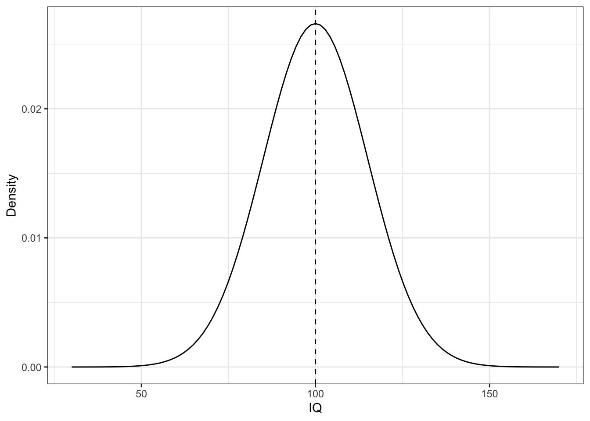
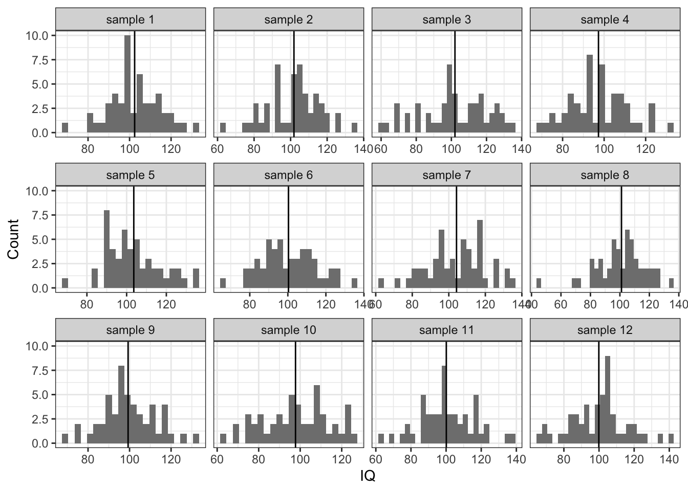
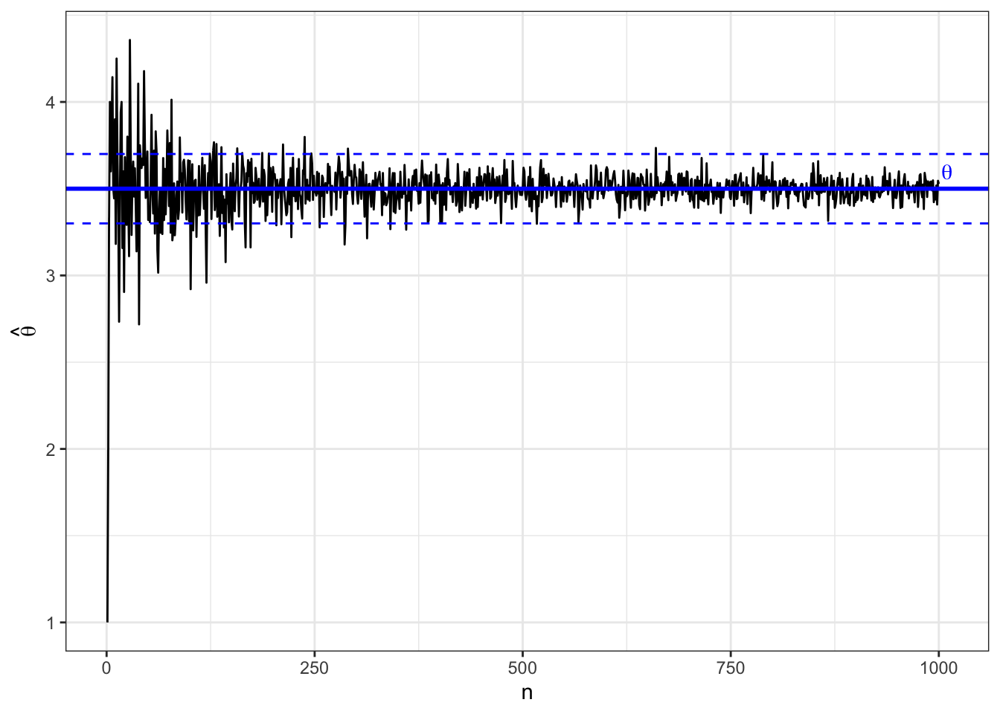
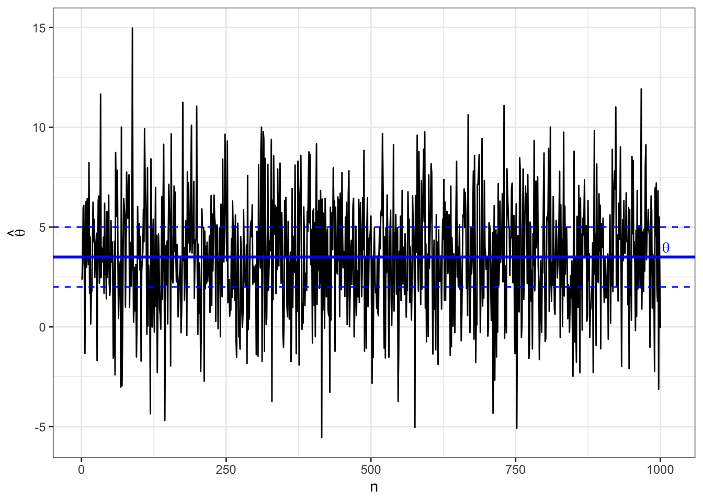
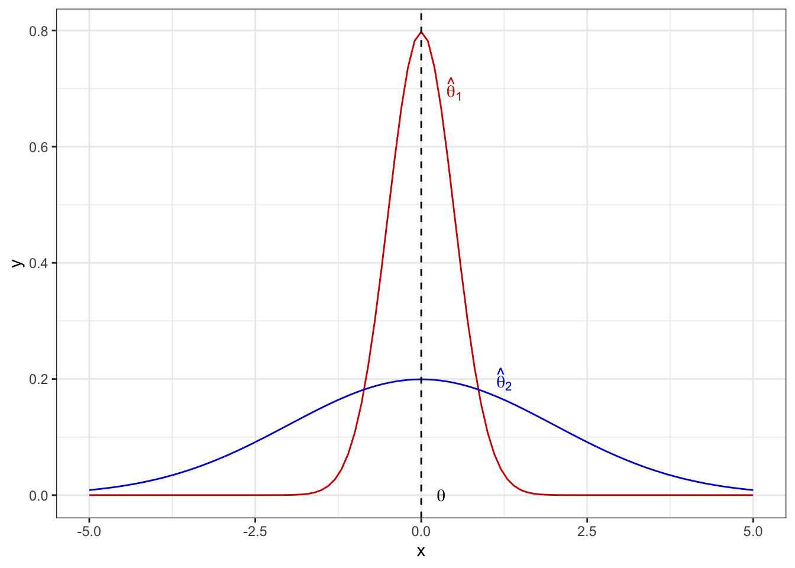
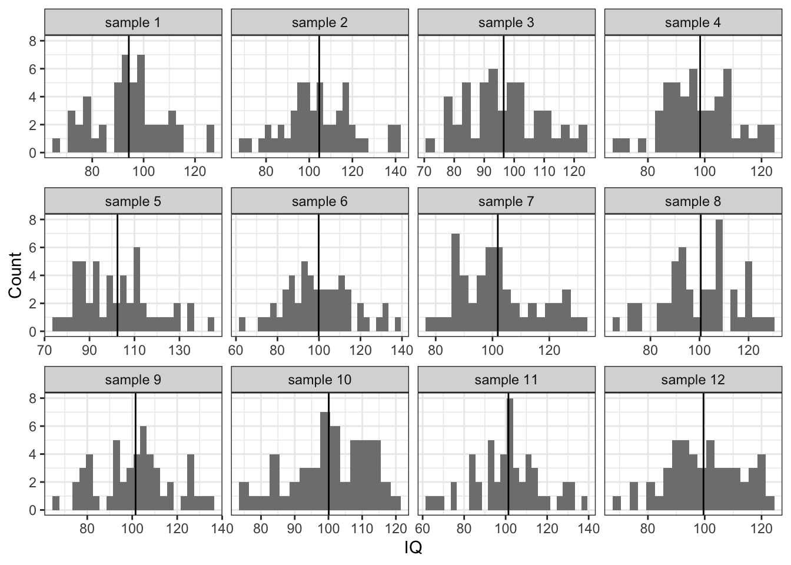
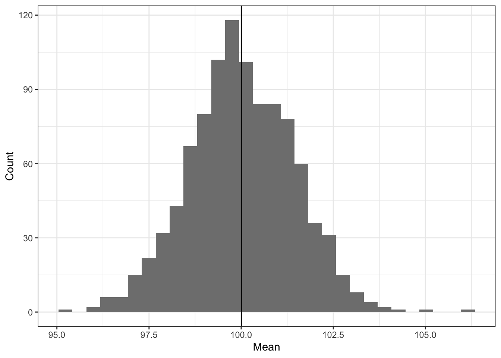
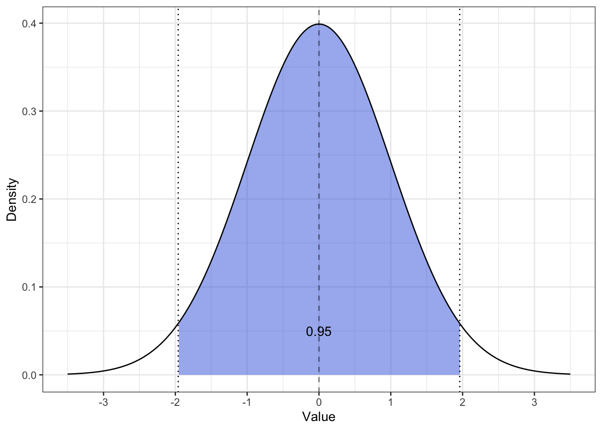
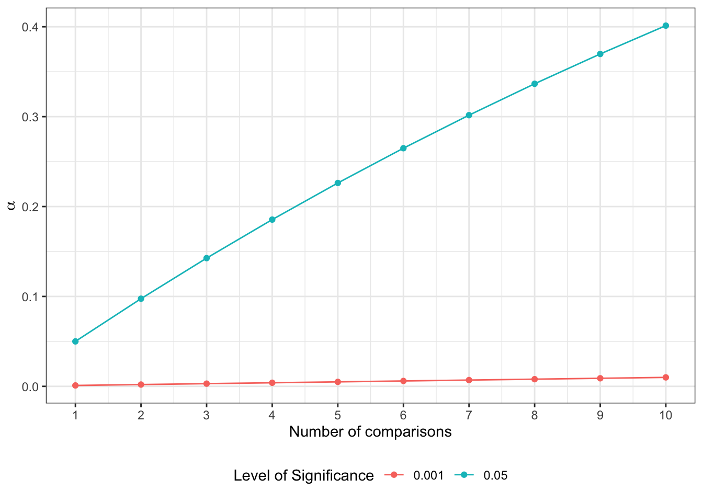

6 L6 // Оценивание параметров в практике статистического анализа. Тестирование статистических гипотез
6.1 Оценивание параметров
Напомним себе весьма малоприятную ситуацию, в которой мы находимся, когда решаем провести некоторое исследование. Мы заинтересованы в изучении генеральной совокупности. Объекты интересующей нас генеральной совокупности обладают определенными признаками, которые мы, собственно, хотели бы изучать. Признаки количественно выражены в определенных показателях.
Признаки могут быть очень разными и измеряться могут с помощью разных показателей. Независимо от того, как измеряется признак, генеральная совокупность характеризуется параметром.
Параметр (\(\theta\)) — относительно постоянная [от одной совокупности к другой] величина, харакретизующая генеральную совокупность по некоторому показателю.
Проблема в том, что величина параметра, который мы изучаем, неизвестна. И никогда не будет известна. Потому что
- мы никогда не можем изучать всю генеральную совокупность, так как она содержит слишком много объектов
- наши измерения всегда содержат ошибку, из-за чего мы ничего не можем измерить точно
Нам остаётся работать только с выборочной совокупность (выборкой) и опираться на статистические данные, которые мы собираем на ней. Измеряя что-либо на выборке, мы получаем выборочную характеристику, или оценку (\(\hat \theta\)) — эмпирический (измеримый) аналог параметра.
Выборка извлекается из генеральной совокупности случайным образом, поэтому что там именно — с точки зрения данных — в нашей выборке будет нам также неизвестно. Отсюда происходят два ключевых свойства статистических данных — неопредлённость и вариативность.
Неопределённость нам говорит о том, что мы не знаем, что именно мы получим в результате наших измерений для конкретной выборки. В том числе потому, что мы работаем на просторах случайных величин.
Вариативность означает, что наши данные будут различатся ещё и от респондента к респонденту. И между выборками тоже. Здесь и ошибка измерения, и различные смешения и ещё куча всего.
В итоге что мы имеем: так как нам не доступны истинные значения параметров, придётся использовать оценки этих параметров. Возникает вопрос: как нам получить эти оценки? и какими свойствами они должны обладать, чтобы хорошо отражать параметры генеральной совокупности?
6.1.1 Точечные оценки
Пусть у нас есть некоторый параметр генеральной совокупности \(\theta\). Его аналогом на выборочной совокупности является его точечная оценка \(\hat \theta\). Точечная она, потому что представляет собой некоторое одно число. Таким образом, это наиболее компактный способ составить представление о значении параметра. По своей сути она, на самом деле, является функцией — по факту, случайной величиной —- от результатов наблюдений:
\[ \hat \theta = \hat \theta (\mathbf{x}), \; \mathbf{x} = \pmatrix{ x_1 & x_2 & \dots & x_n} \]
Это всё замечательно, но что это значит для нас как для практиков? Значение оценки зависит от наблюдений, поэтому на разных выборках мы будем получать разные значения оценки. Возьмем для примера такой параметр как среднее значение. Пусть мы изучаем интеллект — это наш признак — который мы измеряем как коэффициент IQ — это наш показатель (\(X\)). Известно, что в генеральной совокупности этот признак распределен нормально с математическим ожиданием 100 и стандартным отклонением 15, то есть \(X \thicksim \mathcal N(100, 225)\):
Тут нам, конечно, повезло, потому что мы знаем, как устроена шкала IQ1, поэтому мы знаем значение нашего параметра — \(\mu = 100\). В общем случае, конечно, значение параметра, как мы отмечали выше, неизвестно.
Теперь попробуем наизвлекать выборок человек по 50 и посчитать оценки среднего (выборочные средние) \(\hat \mu\) на них:

Наблюдаем, что иногда мы при подсчёте оценке параметра попадаем близко к истинному его значению, иногда промахиваемся. Собственно, как раз об этом неопределённость и вариация.
6.1.1.1 Метод моментов
Чтобы получить точечные оценки параметров, используются разные методы. Метод зависит от того, какой параметр мы хотим оценить, а также с какой моделью мы сейчас работаем. Сейчас мы познакомимся с самым простым — методом моментов.
Слово «момент» обычно вызывает странные ощущения — какой момент? момент чего? что в этот момент случается? Тут надо отпустить привычное понимание слово «момент» как некоторого момента времени и принять тот факт, что «момент случайной величины» — а именно о нём мы говорим — это просто характеристика распределения случайной величины. То есть математическое ожидание — это момент распределения случайной величины, дисперсия — это момент распределения случайной величины.
В методе моментов есть три этапа:
- устанавливается связь между оцениваемым параметром и моментом распределения случайной величины
\[ \quad \theta = \xi(\mu_k), \]
где \(\mu_k\) — это момент случайной величины.
- находятся выборочные моменты
\[ \hat \theta = \xi(\mu_k^*) \]
- истинный момент заменяется на выборочный — получается оценка.
Вернемся к IQ. Эквивален среднего значения в случае генерально совокупности является математическое ожидание, поэтому значение параметра \(\mu\) определяется как
\[ \mu = \mathbb{E}X \]
Выборочным аналогом математического ожидания является выборочное среднее:
\[ \hat \mu = \frac{1}{n} \sum_{i=1}^n x_i = \bar x \]
И это, собственно, всё. Если вы хотя бы раз анализировали данные, вы имплицитно пользовались этим знанием. Просто, скорее всего, не задумывались, что это так работает.
6.1.2 Свойства точечных оценок
Так как точечные оценки всё же оценки, мы можем и промахнуться мимо истинного среднего — это мы наблюдали на гистограмме. Поэтому нам надо предъявить определённые требования к точечным оценкам, которые будут отражать «хорошесть» точечной оценки. Таких требования три: несмещённость, состоятельность и эффективность.
Свойства матемаческого ожидания
При обсуждении свойств точечных оценок нам потребуются два свойства математического ожидания:
- Математическое ожидание суммы независимых случайных величины равно сумме их математических ожиданий
\[ \mathbb{E}(X_1 + X_2) = \mathbb{E}X_1 + \mathbb{E}X_2 \]
- Константу можно выносить за знак математического ожидания
\[ \mathbb{E}(cX) = c \mathbb{E}X \]
6.1.2.1 Несмещенность
Несмещённость выражает следующую идею: когда мы постоянно используем выборочную оценку нашего параметра на выборках некоторого объема, мы в среднем не ошибаемся в оценке параметра.
То есть, конечно, при каждой конкретной оценке нашего параметра на отдельной выборке мы будем совершать ошибку, однако в среднем при многократном повторении измерений и получения оценки мы будем попадать точно в цель — в параметр генеральной совокупности.
\[ \forall n \; \mathbb{E} \hat \theta = \theta \] где \(n\) — объём выборок.
Выше мы рассматривали выборочное среднее как оценку математического ожидания генеральной совокупности. Давайте проверим, является ли такая оценка несмещнной. Для этого нам надо проверить, что выполняется следующее соотношение:
\[ \mathbb{E}(\bar x) = \mu \]
Пусть у нас есть \(n\) выборок, на которых измерена переменная \(X\) — \(X_1\), \(X_2\), \(\dots\), \(X_n\). Эти выборки пришли из одной генеральной совокупности, то есть \(X_1, X_2, \dots ,X_n \overset{\text{i.i.d}}{\thicksim} (\mu, \sigma^2)\). Запись \(\text{i.i.d.}\) означает «независимые одинаково распределенные» (independent identically distributed).
Тогда получается следующее:
\[ \mathbb{E}(\bar X) = \mathbb{E}\Big( \frac{1}{n} (X_1 + X_2 + \dots + X_n) \Big) = \frac{1}{n} \Big( \mathbb{E}(X_1) + \mathbb{E}(X_2) + \dots + \mathbb{E}(X_n) \Big) \]
Поскольку все \(X_i\) пришли из одного и того же распределения \((\mu, \sigma^2)\), то \(\forall i \, \mathbb{E}(x_i) = \mu\). Тогда
\[ \mathbb{E}(\bar X) = \frac{1}{n} \cdot n \cdot \mu = \mu \]
А это ровно то, что утверждается в качестве несмещенности. Таким образом, среднее является несмещенной оценкой математического ожидания.
Кроме среднего, у нас есть еще дисперсия, и мы её тоже всегда оцениванием в ходе анализа данных. На практике мы говорили, что дисперсия случайной величины определяется как \(\text{var}(X) = \mathbb{E}(X^2) - \big( \mathbb{E}X\big)^2\). Эта формула удобна для расчетов, однако дисперсию можно определить и иначе:
\[ \text{var}(X) = \mathbb{E}(X - \mathbb{E}X)^2 = \frac{\sum_{i=1}^n(\mu - x_i)^2}{n} \]
Две формулы, кстати, эквивалентны друг другу и одна выводится из другой:
\[ \begin{split} \text{var}(x) &= \mathbb{E}\big( (X - \mathbb{E}X )^2 \big) = \mathbb{E}\big( X^2 - 2 X \mathbb{E}X + (\mathbb{E}X)^2 \big) = \\ & = \mathbb{E}(X^2) - 2 \mathbb{E}X \mathbb{E}X + (\mathbb{E}X)^2 = \mathbb{E}(X^2) - 2 (\mathbb{E}X^2) + (\mathbb{E}X)^2 = \\ & = \mathbb{E}(X^2) - (\mathbb{E}X^2) \end{split} \]
Итак, в качестве оценки дисперсии, кажется, можно использоваться \(\text{var}(X) = \frac{\sum_{i=1}^n(\mu - x_i)^2}{n}\), однако из столкновения с реальностью мы знаем, что в знаменателе формулы, которую мы реально используем стоит \(n-1\). Почему?
Проверим оценку дисперсии на несмещенность. Нам нужно показать, что \(\mathbb{E}(\hat \sigma^2) = \sigma^2\), тогда мы сможем сказать, что оценка является несмещенной. По формуле получается, что
\[ \begin{split} \mathbb{E}(\hat \sigma^2) & = \mathbb{E}\Big( \mathbb{E}(X^2) - (\mathbb{E}X)^2 \Big) = \\ & = \mathbb{E}\Big( \overline{X^2} - \bar X^2\Big) = \mathbb{E}(\overline{X^2}) - \mathbb{E}(\bar X^2) \end{split} \]
Рассмотрим сначала \(\mathbb{E}(\overline{X^2})\):
\[ \mathbb{E}(\overline{X^2}) = \mathbb{E}\Big( \frac{X_1^2 + X_2^2 + \dots + X_n^2}{n} \Big) = \frac{1}{n} \Big( \mathbb{E}X_1^2 + \mathbb{E}X_2^2 + \dots + \mathbb{E}X_n^2\Big) \]
Так как все наблюдения приходят из одного и того же распределения, то все математические ожидания будут равны, поэтому:
\[ \mathbb{E}(\overline{X^2}) = \frac{1}{n} \cdot n \cdot \mathbb{E}(X_i^2) = \mathbb{E}(X_i^2) \]
Теперь \(\mathbb{E}(\bar X^2)\):
\[ \begin{split} \mathbb{E}(\bar X^2) &= \mathbb{E}\Big( \frac{X_1 + X_2 + \dots + X_n}{n} \Big)^2 = \\ & = \frac{1}{n^2} \mathbb{E}(X_1 + X_2 + \dots + X_n)^2 = \\ & = \frac{1}{n^2} \mathbb{E}(X_1^2 + X_2^2 + \dots X_n^2 + 2X_1X_2 + \dots + 2X_{n-1}X_n) = \\ & = \frac{1}{n^2} \mathbb{E}\Big( (X_1^2 + X_2^2 + \dots X_n^2) + (2X_1X_2 + \dots + 2X_{n-1}X_n) \Big) \end{split} \]
Внутри скобок получается два слагаемых: если с \(X_i^2\) все понятно — выше мы уже с ним сталкивались, то со вторым надо разбираться, а именно, подсчитать, сколько попарных произведений случайных величин у нас будет. Их будет \(C_n^2 = \frac{n(n-1)}{2}\). Поэтому если мы будем раскрывать скобки, то получим слоедующее:
\[ \begin{split} \mathbb{E}(\bar X^2) & = \frac{1}{n^2} \cdot n \cdot \mathbb{E}(X_i^2) + \frac{1}{n^2} \cdot \frac{n(n-1)}{2} \cdot 2 \mathbb{E}(X_iX_j) = \\ & = \frac{1}{n} \mathbb{E}(X_i^2) + \frac{n-1}{n} (\mathbb{E}X_i)^2 \end{split} \]
Теперь соберем две части вместе:
\[ \begin{split} \mathbb{E}(\hat \sigma^2) & = \mathbb{E}(\overline{X^2}) - \mathbb{E}(\bar X^2) = \\ & = \mathbb{E}(X_i^2) - \frac{1}{n} \mathbb{E}(X_i^2) - \frac{n-1}{n} (\mathbb{E}X_i)^2 = \\ & = \frac{n}{n} \mathbb{E}(X_i^2) - \frac{1}{n} \mathbb{E}(X_i^2) - \frac{n-1}{n} (\mathbb{E}X_i)^2 = \\ & = \frac{n-1}{n} \Big ( \mathbb{E}(X_i^2) - (\mathbb{E}X_i)^2 \Big) = \\ & = \frac{n-1}{n} \sigma^2 \end{split} \]
Получается, что математическое ожидание нашей оценки оказывается равно не самому значению интересующего нас параметра, а значению параметра, умноженному на некоторое число \(\frac{n-1}{b}\), то есть оценка является смещенной. Именно поэтому для расчета дисперсии на выборке используется выборочная, или исправленная, дисперсия.
Как она исправляется? Если у нас оценка дисперсии отличается от значения параметра в \(\frac{n-1}{n}\) раз, то надо домножить оценку на \(\frac{n}{n-1}\):
\[ s^2 = \frac{n}{n-1} \cdot \hat \sigma^2 = \frac{n}{n-1} \cdot \frac{1}{n} \sum (x_i - \bar x)^2 = \frac{1}{n-1} \sum (x_i - \bar x)^2 \]
И вот мы получили знакомую нам формулу для расчета выборочной дисперсии. Такая оценка является несмещенной.
Иногда несмещенность от оценки бывает потребовать сложно, тогда можно ограничиться ассимптотической несмещенностью:
\[ (\mathbb{E}\hat \theta - \theta) \underset{n \rightarrow \infty}{\rightarrow} 0, \]
где \((\mathbb{E}\hat \theta - \theta)\) — смещение. Ассимптотическая несмещенность требует, чтобы математическое ожидание нашей оценки приближалось к значению параметра с ростом объема выборки.
6.1.2.2 Состоятельность
Математически состоятельность определяется следующим образом:
\[ \lim_{n \rightarrow \infty} \mathrm{P}(|\hat \theta - \theta| < \varepsilon) = 1, \, \varepsilon > 0 \]
Содержательно эта запись нам говорит следующее, что при неограниченном росте мощности выборки наша оценка стремится к истинному значению параметра. Или, проще, с ростом выборки значение нашей оценки все реже выпадает из некоторого достаточно узкого интервала \((\theta - \varepsilon, \theta + \varepsilon)\). Может быть, такая формулировка не совсем точна математически, но позволяет представить, что происходит.
Давайте посмотрим на это на картинке. Нже изображено поведение состоятеной оценки с ростом выборки:

А так ведет себя несостоятельная оценка:

6.1.2.3 Эффективность
Эффективность точечной оценки определяется достаточно просто. Так как оценка параметра — это случайная величина, но у неё есть дисперсия. Чтобы оценка была эффективна, её дисперсия должна быть минимальной:
\[ \sigma^2_{\hat \theta} = \min \]
Опять же попробуем посмотреть на это на картинке:

6.1.3 Интервальные оценки
Кроме самого значения оценки, необходимо определить качество этой оценки, иначе говоря — её точность. Для этого используется такая величина как надёжность:
\[ \gamma = \mathbb{P}(\theta_\min < \theta < \theta_\max) \]
Такая форма оценки называется интервальной оценкой параметра, так как мы указываем интервал, в котором находится истинное значение с определённой вероятностью.
Такая форма оценки даёт исчерпывающую информацию о параметре: мы знаем (1) интервал, в котором находится значение параметра генеральной совокупности, а также (2) надёжность, с которой выбранный интервал накрывает это значение.
Значение надежности \(\gamma\) может быть выбрано произвольно, но обычно оно близко к единице. Однако необходимо помнить, что чем выше надёжность, тем шире границы интервальной оценки.
6.1.3.1 Стандартная ошибка
Для того, что получить интервальную оценку нашего параметра, нам нужно изучить, как ведет себя наша выборочная оценка в случае, когда мы много раз извлекаем выборку из генеральной совокупности. Рассмотрим на примере среднего значения.
Пусть мы в том же примере с IQ, который обсуждали выше. Мы знаем, что распределение параметра в генеральной совокупности такое:

Вновь извлечем несколько выборок из нашей генеральной совокупности:

Мы уже отмечали, что на отдельной выборке мы будем получать оценку среднего, которая будет отличаться от значения параметра в генеральной совокупности. Однако если мы извлечем много выборок — скажем, 1000 выборок по 100 наблюдений — посчитаем на каждой среднее и построим распределение выборочных средних, то получим нечто такое:

Наши средние будут как-то распределены, при это среднее средних будет оказываться очень близко с значению нашего параметра. При этом данное распределение крайне похоже на нормальное и может быть описано как \(\mathcal N(\overline{\bar x}, \sigma_{\bar x}^2)\), то есть как и любое нормальное распределение получившееся распределение будет описываться некоторой дисперсией. Стандартное отклонение этого распределения называется стандартной ошибкой среднего (standard error of mean):
\[ \text{se}(\bar x) = \sqrt{\sigma^2_{\overline x}} = \sigma_{\overline x} \]
В нашем случае оно будет равно 1.43.
Стандартная ошибка среднего является одной из интервальных оценок среднего значения. Однако выше мы сказали, что для интервальной оценки нам надо указать надежность, то есть вероятность, с которой значение изучаемого параметра находится в интервале, задаваемом интервальной оценкой. Можем ли мы это сделать в случае стандартной ошибки? Да, поскольку мы значем как устроено нормальное распределение. Так как стандартная ошибка является стандартным отклонением распределения выборочных средних, а в пределах отдного стандартного отклонения от среднего лежит 68.2% значений нормально распределенной случайной величины, то мы можем записать:
\[ \begin{split} 0.682 & = \mathbb{P}(\overline{\bar x}-\sigma^2_{\overline x} < \mu < \overline{\bar x}+\sigma^2_{\overline x}) \\ & = \mathbb{P}(98.57 < \mu < 101.43) \end{split} \]
То, что мы проделали выше легитимизировано цетральной предельной теоремой. Визуализацию можно найти здесь.
Это конечно хорошо, но мы же не можем каждый раз извлекать по 1000 выборок, чтобы рассчитать стандартную ошибку среднего. Нам необходим способ её расчета по одной выборки, чтобы мы могли производить интервальную оценку нашего параметра в одном отдельной исследовании. Такой способ подсчета есть, и он выглядит так:
\[ \text{se}_X = \frac{\text{sd}_X}{\sqrt{n}} = \frac{\hat \sigma^2_X}{\sqrt{n}} \]
Вообще-то такое равенство совершенно неочевидно, поэтому попробуем понять, почему оно справедливо.
Свойства дисперсии
Для того, чтобы вывести эту формулу нам потребуются два свойства дисперсии:
- Дисперсия суммы двух независимых случайных величины равна сумме их дисперсий
\[ \text{var}(X + Y) = \text{var}(X) + \text{var}(Y) \]
- Константа выносится из-под знака дисперсии с возведением в квадрат:
\[ \text{var}(aX) = a^2 \text{var}(X) \]
Так как наблюдения извлекаются из независимых одинаково распределенных величин (independent identically distributed, iid), то они независимы. Получается что дисперсия распределения выбборочных средних будет равна:
\[ \text{var}\bar X_i = \text{var}\Big( \frac{1}{n} \sum X_i \Big) \]
По свойствам дисперсии:
\[ \begin{split} \text{var}\bar X_i & = \text{var}\Big( \frac{1}{n} \sum X_i \Big) \\ & = \frac{1}{n^2} \sum \text{var}(X_i) = \frac{1}{n^2} \sum \sigma^2 = \frac{n}{n^2} \sigma^2 = \frac{\sigma^2}{n} \end{split} \]
Так как стандартная ошибка это старндартное отклонение распределения выборочных средних, то:
\[ \text{se}_X = \sqrt{ \text{var}\Big( \frac{1}{n} \sum X_i \Big)} = \sqrt{\frac{\sigma^2}{n}} = \frac{\sigma}{\sqrt{n}} \]
Вот и получается формула для расчета стандартной ошибки на одной выборке.
6.1.3.2 Доверительный интервал
Другим вариантом интервальной оценки является доверительный интервал (confidence interval). На практике он используется гораздо чаще стандартной ошибки, но оказывается тесно с ней связан. Итак, ещё раз:
\[ \mathrm{P}(\theta_\min < \theta < \theta_\max) = \gamma, \; \gamma \rightarrow 1 \]
\(theta_\min\) и \(\theta_\max\) — границы доверительного интервала, \(\gamma\) — доверительная вероятность. На практике её значение чаще всего принимается равным \(0.95\).
Что нам нужно, чтобы определить границы, в которых значение параметра лежит с вероятностью \(0.95\), если мы значем, про наша оценка распределена нормально?
Мы знаем особое нормальное распределение \(z \thicksim \mathcal N(0, 1)\), которое называется стандартным нормальным распределением. Можно рассчитать границы следующего интервала:

Оказывается, что \(z\)-значение с вероятностью 0.95 попадается в интервал \([z_{\min}, z_{\max}] = [-1.96, 1.96]\). Зная эти точки и воспользовавшись принципом стандартизации, мы можем записать следующее:
\[ \mathbb{P}\Big( \bar x - z_\min \text{se}_X < \mu < \bar x + z_\max \text{se}_X \Big) = \gamma \]
Или конкретнее:
\[ \mathbb{P}\Big( \bar x - -1.96 \text{se}_X < \mu < \bar x + 1.96 \text{se}_X \Big) = 0.95 \]
То есть, зная стандартную ошибку мы можем рассчитать доверительный интервал. В общем случае, любой — 95%, 90%, 99% и др. — подставляя разные \(z_\min\) и \(z_\max\).
6.1.3.3 Интерпретация доверительного интервала
С учетом расчета нам очень хочется сказать, что границы доверительного инетрвала задают диапазон, в котором значение нашего параметра — математического ожидания в генеральной совокупности — лежат с вероятностью 0.95. Однако это не верно!
Здесь в игру вступает фреквентистский подход (см. далее), в котором мы с вами живем. Корректная интерпретация границ доверительного интервала звуит так:
Если мы будет бесконечно извлекать новые выборки из генеральной совокупности, рассчитывать на них средние и 95% доверительные интервалы к ним, то генеральное среднее попадёт в границы 95% таких доверительных интервалов.
То есть, если мы извлечем 100 выборок, посчитаем на каждой из них среднее и построим 95% доверительный интервал к каждому из 100 средних, то 95 доверительных интервалов из 100 будут содержать генеральное среднее — а 5 интервалов содержать его не будут.
Визуализацию этого можно наблюдать здесь.
Реальная вероятность, что значение параметра генеральной совокупности попадет в пределы конкретного доверительного, рассчитанного в данном исследовании, оказывается меньше — около 84.3%.
6.2 Тестирование гипотез
В ходе статистического анализа мы, главным образом, заняты тем, что тестируем статистические гипотезы. Ведь на какого рода вопросы мы отвечаем с помощью анализа?
- Различаются ли группы между собой?
- Значимо ли влияние какого-либо фактора? → Различаются ли группы между собой?
- Хороша ли та модель, которую мы построили? → Отличается ли она от нулевой модели?
И так далее. Так или иначе, всё сводится в тому, что мы ищем какие-то различия. Но силу того, что у нас неопределённость и вариация в данных, мы просто так «в лоб» сказать о различиях по оценкам параметров не можем. Приходится тестировать статистические гипотезы.
6.2.1 Нулевая и альтернативная гипотезы
Что такое гипотеза и какие они вообще бывают?
- Гипотеза (\(H\)) — это предположение, которое подлежит проверке на основе результатов наблюдений.
- Гипотезы бывают:
- теоретические — про конструкты
- эмпирические — про переменные
- статистические — про параметры [генеральной совокупности] и данные
Статистические гипотезы бывают простыми и сложными:
- Простая гипотеза — это такое предположение, которое включает в себя какое-либо однозначно определеяемое утверждение. Например, истинная величина параметра соответствует некоторому строго заданному значению: \(H : \theta = \theta_0\). Другой вариант — две генеральные совокупности имеют одно и то же значение одной и той же характеристики: \(H : \theta_1 = \theta_2\).
- Сложная гипотеза предполагает множественность вариантов для параметра, которые укладываются в рамки проверяемого предположения. Например, \(H : \theta > \theta_0\) или \(H : \theta_1 \neq \theta_2\).
В рамках самого хода тестирования гипотез существует проверяемая (нулевая) гипотеза (\(H_0\)). Её обычно стараются предельно упростить, поэтому она формулируется как простая гипотеза. В противовес ей выдвигается альтернативная гипотеза (\(H_1\)), которая будет иметь вид сложной гипотезы.
Для проверки гипотезы необходимы две вещи:
- результаты наблюдений и
- критерий.
Результаты наблюдений, полученные на выборке, сами по себе, как правило, не используются. Однако на их основе рассчитываются выборочные статистики (показатели), которые непосредственно участвуют в проверке гипотезы.
6.2.2 Подходы к тестированию статистических гипотез
6.2.2.1 Фреквентистский подход
Фреквентистский подход, широко распространенный в тестировании статистических гипотез, задается следующим вопросом:
Какова вероятность получить такие данные, если допустить, что нулевая гипотеза верна?
То есть в этой логике мы собираем какие-то данные в ходе исследования, формулируем некоторую статистическую гипотезу \(H_0\) об отсутствии закономерности в генеральной совокупности, и далее определяем, насколько вероятно было бы получить вот эти данные, которые у нас сейчас есть, в случае, когда закономерности нет.
Далее, если эта вероятность мала, то мы делаем вывод, что в генеральной совокупности закономерность всё-такие есть — поэтому мы получили данные, которые не характерны для случая, когда верна нулевая гипотеза. Если же мы получаем, что такая вероятность велика, то мы остаемся с нулевой гипотезой, которую не удалось отклонить.
Этот подход требует возможности много раз повторять наше исследование, чтобы проверять, действительно ли мы из ра-а в раз будем получать схожие результаты — то есть, фреквентистский подход хорошо работает в долгосрочной перспективе и именно когда у нас есть возможность повторять наше исследование, в которых мы тестируем одни и те же гипотезы, мы можем получать достаточно однозначные выводы об изучаемых закономерностях.
6.2.2.2 Байесовский подход
Если мы внимательно вдумаемся в тот вопрос, которым задается фреквентистская статистика, мы поймем, что он достаточно тупой: нам вообще-то не интересует вероятность получить вот эти данные, если нулевая гипотеза верна. Почему? Потому что мы эти данные уже получили. Гораздо более интересным является вопрос о том,
насколько вероятная справедливость нулевой или альтернативной гипотезы при условии, что мы получили такие данные.
Этим вопросом задается байесовская статистика, которая постепенно набирает свое влияние среди исследователей. Сложно сказать, какой из двух подходов лучше — у каждого есть свои плюсы, у каждого есть свои минусы, и каждый обладает своими особенностями. В целом, они хорошо дополняют друг друга, и одни и те же данные могут быть проанализированы как с помощью байесовского, так и с помощью фреквентистского подхода.
Однако в нашем курсе мы будем идти классическим путем и рассматривать тестирование статистических гипотез во фреквентистском подходе.
6.2.3 Возможные результаты проверки гипотез
В результате проверки статистических гипотез могут возникнуть четыре ситуации.
Мы изучаем в исследовании какую-либо закономерность, которая в реальном мире может существовать, а может и не существовать. В силу неопределённости и вариативности наших данных мы может либо обнаружить интересующую нас закономерность, либо не обнаружить.
В качестве нулевой гипотезы мы выдвигаем предположение о том, что закономерность отсутствует — так мы упрощаем нашу нулевую гипотезу. Пусть \(H_0\) обозначает, что предположение, которое мы проверяем справедливо, а \(H_1\) — не справедливо. На основании данных мы можем либо не отклонить наше предположение (\(\hat H_0\)), либо отклонить (\(\hat H_1\)).
Тогда имеем следующую ситуацию:
| \(H_0\) | \(H_1\) | |
|---|---|---|
| \(\hat H_0\) | ✓ | Ошибка II рода |
| \(\hat H_1\) | Ошибка I рода | ✓ |
- Ошибка I рода возникает, когда в генеральной совокупности искомой закономерности нет, но мы в силу случайных флуктуаций в данных её нашли.
- Ошибка II рода возникает, когда в генеральной совокупности искомая закономерность есть, но мы в силу каких-либо причин её не нашли.
Ошибки — это нехорошо, они нас не устраивают. Надо каким-то образом их контролировать.
- Ошибка I рода контролируется достаточно просто. Так как мы нашли закономерность, которую искали, мы можем посчитать вероятность, с которой потенциально ошиблись. А собственно контролировать ошибку мы будем с помощью уровня значимости \(\alpha\), который выбирается до начала процедуры тестирования гипотезы. Он и задает вероятность, с который мы позволяем себе ошибиться — отклонить нулевую гипотезу, при условии, что она верна.
- Ошибку II рода контролировать сложнее, так как мы не нашли закономерность, которую искали. Нам нужна какая-то метрика, которая позволит сказать, что мы сделали всё возможное для того, чтобы обнаружить искомую закономерность. Вероятность ошибки II рода обозначается \(\beta\) — тогда вероятность того, что мы не совершили ошибку II рода будет \(1 - \beta\). Эта величина называется статистической мощностью, и она связана с размером эффекта и объемом выборки. Статистическую мощность рассчитывают до проведения статистического анализа — она помогает определить требуемый объема выборки.
Соберем все обозначения в единую табличку2:
| \(H_0\) | \(H_1\) | |
|---|---|---|
| \(\hat H_0\) | \(\mathrm P (\hat H_0 | H_0)\) | \(\mathrm P (\hat H_0 | H_1) = \beta\) |
| \(\hat H_1\) | \(\mathrm P (\hat H_1 | H_0) = \alpha\) | \(\mathrm P (\hat H_1 | H_1) = 1 - \beta\) |
Уровень значимости \(\alpha\) выбирается близким к нулю — всем знакомо конвенциональное значение \(0.05\). Вообще \(\alpha\) можно выбрать сколь угодно малым, однако при выборе уровня значимости руководствуются принципом разумной достаточности, так как если устремить \(\alpha\) к нулю, то устремиться к нулю и вероятность отклонения нулевой гипотезы.
\[ \mathrm P (\hat H_1) = \mathrm P (\hat H_1 | H_0) \cdot \mathrm P (H_0) = \alpha \cdot \mathrm P(H_0) \]
Достаточной статистической мощностью считается \(0.8\). Аналогично, устремляя мощность к единице (\((1 - \beta) \rightarrow 1 \Rightarrow \beta \rightarrow 0\)), мы устремляем вероятность не отклонения нулевой гипотезы к нулю:
\[ \mathrm P (\hat H_0) = \mathrm P (\hat H_0 | H_1) \cdot \mathrm P (H_1) = \beta \cdot \mathrm P (H_1) \]
6.2.3.1 Асимметрия статистического вывода
Выше мы сказали, что для проверки гипотезы нужны две вещи:
- результаты наблюдений и
- критерий.
С результатами наблюдений более-менее очевидно.
Критерий — это правило, согласно которому гипотезу либо принимают, либо отклоняют. Однако перед тем как проверять гипотезу, её так-то нужно сформулировать, и сделать это правильно, поскольку от формулировки гипотезы зависит интерпретация результатов проверки и дальнейшее использование полученной информации.
Используемая статистика сама по себе является [непрерывной] случайной величиной, а значит может быть построено её распределение. Критерий будет разделять это распределение на непересекающиеся области. В результате чего возникает критическая область — область отклонения гипотезы. Дополнением к ней является область неотклонения гипотезы.
Критическая область может быть односторонней (при \(H_1:\theta > \theta_0\) или \(H_1: \theta < \theta_0\)) и двусторонней (при \(H_1:\theta \neq \theta_0\)). «Размер» критической области определяется уровнем значимости.
Статистический вывод — заключение о том, получили ли мы подтверждение альтернативной гипотезы — по структуре представляет собой импликацию и звучит так:
Если значение статистики критерия попало в критическую область, то у нас есть основания отклонить нулевую гипотезу в пользу альтернативной
К чему приводит факт, что это утверждение является имликацией:
- Если значение нашей статистики, которое мы рассчитали на выборке, попало в критическую область, то мы говорим о том, что нулевая гипотеза отклоняется.
- Если значение нашей статистики, которое мы рассчитали на выборке, не попало в критическую область, то мы не получаем оснований для того, чтобы отклонить нулевую гипотезу. Однако мы также не получаем оснований, чтобы её «принять». Мы остаёмся в некотором неведении: мы не нашли различий, а есть они там или нет — хто ж их знает… Итого, мы не можем сделать никакого вывода.
В этом и заключается асимметрия статистического вывода. Как раз для того, чтобы с ней как-то жить, мы работаем со статистической мощностью.
6.2.3.2 Связь ошибки первого и второго рода
Необходимо также помнить, что ошибки первого и второго рода связаны между собой так, что
\[ \alpha \rightarrow 0 \Rightarrow \beta \rightarrow 1 \]
\[ \begin{split} \beta \cdot \mathrm P (H_1) & = \mathrm P (\hat H_0) = \mathrm P (\hat H_0 | H_0) \cdot \mathrm P (H_0) \Rightarrow \\ \beta & = \frac{1}{\mathrm P (H_1)} \cdot \mathrm P (H_0) \cdot \mathrm P(\hat H_0 | H_0) \\ \beta & = \frac{1}{\mathrm P (H_1)} \cdot \big (1 - \mathrm P (H_1 | H_0)\big) = \frac{1}{\mathrm P (H_1)} \cdot \mathrm P (H_0) \cdot (1 - \alpha) \end{split} \]
6.2.4 Агоритм тестирования статистических гипотез
Для тестирования гипотез есть два сценария: первый и тот, которым мы будем пользоваться. Первый вариант чуть более классический, второй — более гибкий.
Сценарий номер раз
- Формулировка гипотезы
- Выбор статистического критерия
- Выбор уровня значимости \(\alpha\)
- Построение закона распредления статистики критерия при условии, что нулевая гипотеза верна
- Определение границ критической области
- Расчёт выборочной статистики
- Определение, попадает ли наблюдемое значение статистики в критическую область и вынесение решения
Сценарий номер два
- Формулировка гипотезы
- Выбор статистического критерия
- Выбор уровня значимости \(\alpha\)
- Построение закона распредлеения статистики критерия при условии, что нулевая гипотеза верна
- Расчёт выборочной статистики
- Расчёт достигнутого уровня значимости p-value
- Сопоставление \(\alpha\) и p-value и вынесение решения
Почему второй вариант более гибкий? Представим, что мы захотели понизить уровень значимости с \(0.05\) до \(0.01\) — такие уровни значимости всречаются, например, в медицине. Если мы идем по первому сценарию, то нам надо заново пересчитать критические значения и вновь проанализировать, попадает ли наблюдаемое значение в критическую область. Если мы адепты второго сценария, то нам надо только выполнить одно новое сравнение нашего p-value с новым уровнем значимости.
6.2.5 Размер эффекта и статистическая мощность
Ошибку второго рода контролировать сложнее, чем ошибку первого рода, так как мы не обнаруживаем закономерность. Собственно, ошибка второго рода соответствует ситуации, когда мы не обнаружили закономерность при условии, что закономерность в генеральной совокупности присутствует. На эту вероятность влияет «размер» той закономерности, её «сила», в генеральной совокупности. Это велична называется размером эффекта. Численным выражением силы взаимосвязи в генеральной совокупности является размер эффекта (effect size).
Из-за того, что в случае ошибки второго рода мы не можем работать с её вероятностью \(\beta\) — опят же, так как мы не обнаруживаем в этом случае закономерность — мы работает с вероятностью \(1-\beta = \mathbb{P}(\hat H_1|H_1)\). Это вероятность, с которой мы обнаружим закономерность при условии, что в генеральной совокупности закономерность есть. Эта величина называется статистическая мощность (statistical power) исследования.
Статистическая мощность зависит от размера эффекта и объема выборки. Вопрос: как размер эффекта, статистическая мощность и объем выборки соотносятся между собой?
- Чем больше размер эффекта, тем меньшую по объему выборку нам необходимо набрать, чтобы достигнуть требуемой статистической мощности.
- Чем больше выборка, тем выше статистическая мощность исследования.
Посмотреть, как все эти штуки друг с другом соотносятся можно тут.
6.2.6 Ложноположительный вывод
6.2.6.1 Проблема множественных сравнений
Итак, мы сравниваем попарно все группы наблюдений между собой. В каждом сравнении мы фиксируем вероятность ошибки первого рода с помощью уровня значимости на уровне \(0.05\). А какова будет вероятность ошибки, если мы проводим несколько сравнений?
Считаем, что наши сравнения независимы, поэтому вероятности будут перемножаться1. Если верояность ошибиться в одном сравнении равна \(\alpha\), то вероятность сделать правильный вывод — \(1 - \alpha\). Тогда вероятность сделать правильный вывод в \(m\) сравнениях — \((1 - \alpha)^m\). Отсюда мы можем вывести вероятность ошибиться хотя бы в одном сравнении:
\[ \mathbb{P}^′ = 1 - (1 - \alpha)^m \]
Пусть у нас есть три группы, которые нам надо сравнить друг с другом — получается необходимо провести три сравнения. Итого вероятность ошибиться получается:
\[ \mathbb{P}^′ = 1 - (1 - 0.05)^3 \approx 0.143 \]
Значительно больше, чем \(0.05\), что нехорошо. И дальше только хуже. Поэтому нам надо либо корректировать уровень значимости, либо использовать мощные методы типа дисперсионного анализа.

6.2.6.1.1 Корректировка уровня значимости
Корректировать уровень значимости можно по-разному. Например, можно разделить \(\alpha\) на количество попарных сравнений — такой способ называется поправкой Бонферрони (Bonferroni):
\[ \alpha’ = \frac{\alpha}{n}, \]
где \(n\) — число попарных сравнений.
Поправка Бонферрони считается самой консервативной поправкой — она достаточно сильно уменьшает уровень значимости, и мы можем не поймать искомую закономерность, то есть совершить ошибку второго рода2. Поэтому придумали более либеральные поправки, например, поправку Холма (Холма–Бонферрони, Holm) или поправку Тьюки (Tukey’s HSD test).
На практике в силу того, что в статистических пакетах мы работаем с p-value, корректируется именно его значение.
По достаточно незамысловатой логике Здесь: вариант для поправки Бонферрони.
\[ p < \frac{\alpha}{n} \Rightarrow np < \alpha \]
Таким образом, мы просто сравниваем уже скорретированное p-value, которое нам считает программа, с тем же самым \(\alpha = 0.05\). Жизнь становится значительно проще и приятнее.